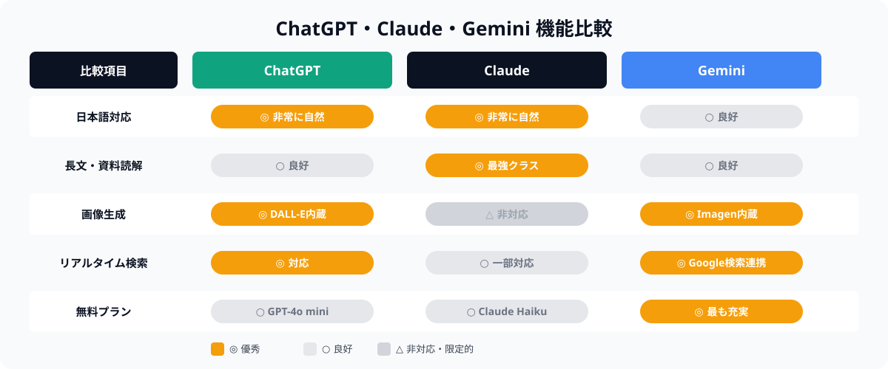
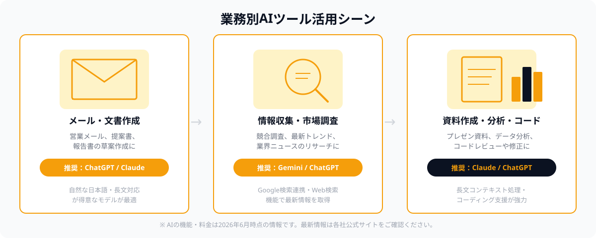

「どのAIを使えばいい？」と迷い続けていませんか
「AIを使いたいけど、ChatGPT・Claude・Geminiのどれを使えばいいかわからない」——2026年現在、AI初心者からビジネスパーソンまで、この悩みを持つ人は非常に多くなっています。
3つともOpenAI・Anthropic・Googleというトップ企業が開発した高品質なAIです。それぞれに強みと特徴があり、「どれが一番いいか」という単純な答えはありません。ただ、「どの業務に何を使うか」という視点で選ぶと、AIの恩恵を最大化できます。
この記事では、各AIの特徴を整理したうえで、メール作成・情報収集・資料作成・コーディング補助などビジネスの場面ごとに、どのAIが最適かをわかりやすく解説します。
3大AIの基本的な違いを整理する
ChatGPT（OpenAI）
ChatGPTはOpenAIが開発した、世界で最も広く使われている対話型AIです。2022年末のリリース以来、圧倒的なユーザー数を誇り、プラグインや画像生成（DALL-E）、Web検索、コード実行など多彩な機能を備えています。
- 強み：汎用性が高く、日本語対応も自然。プラグインエコシステムが充実している
- 弱み：長文の精密な読解ではClaudeにやや劣る場合がある
- 料金：無料プラン（GPT-4o mini）あり。有料プランはChatGPT Plus（月額約3,000円〜）
Claude（Anthropic）
ClaudeはAnthropicが開発したAIで、「安全で有益で誠実なAI」を設計思想に持ちます。特に長文ドキュメントの読解・要約と丁寧な日本語での文章生成に強みがあります。PDFや長い報告書を読み込ませての分析作業では、現在最高クラスの性能を誇ります。
- 強み：長文コンテキスト処理（最大200,000トークン）、文章の自然さ、安全性への配慮
- 弱み：画像生成機能を持たない。Web検索機能は一部プランのみ
- 料金：無料プラン（Claude Haiku相当）あり。有料プランはClaude Pro（月額約3,000円〜）
Gemini（Google）
GeminiはGoogleが開発したAIで、Google検索・Gmail・Googleドキュメントとのシームレスな連携が最大の強みです。リアルタイムのWeb情報取得と画像生成（Imagen）を無料で使えるため、コスパに優れた万能型AIとして注目されています。
- 強み：Google サービスとの連携、リアルタイム検索、無料プランの充実度
- 弱み：長文コンテキスト処理での正確性はClaude・ChatGPTにやや劣る場合がある
- 料金：無料プランが最も充実。有料プランはGemini Advanced（月額約2,900円〜）
機能比較：何が得意で何が苦手か
以下の比較図で、3つのAIの主要機能を一覧で確認できます。

ポイントをまとめると：
- 日本語の自然さ：ChatGPT・Claude が特に優秀。Geminiも良好だが、長文では差が出ることがある
- 長文読解：Claudeが最強クラス。200,000トークン（約15万字）もの長文を一度に処理できる
- 画像生成：ChatGPT（DALL-E）・Gemini（Imagen）が対応。Claudeは非対応
- リアルタイム検索：ChatGPT・Geminiが強い。特にGeminiはGoogle検索と直結
- 無料プランの充実度：Geminiが最も充実しており、無料でも高機能
業務別の使い分け方：具体的なシーン別ガイド

メール・文書作成
推奨：ChatGPT または Claude
営業メール・提案書・社内報告書など、文書を作成する業務ではChatGPTとClaudeの両方が高い実力を発揮します。特にトーン（丁寧さ・親しみやすさ）の細かい調整や長い文書の一括リライトであれば、Claudeが優れています。ChatGPTは多彩な文体のバリエーション生成や、既存プラグインとの連携が強みです。
実際の使い方例：
- 「以下のメールを丁寧かつ簡潔にリライトしてください」と指示してメール本文を貼り付ける
- 「提案書の構成案を作って。要件：〇〇」と伝えてアウトライン生成
- 生成された内容を確認・修正して仕上げる
情報収集・市場調査
推奨：Gemini または ChatGPT
最新の競合情報・業界トレンド・ニュースを収集したい場合は、リアルタイムWeb検索に強いGeminiかChatGPTが適しています。GeminiはGoogle検索と直結しているため、検索結果をまとめて要約してもらうといった用途で特に便利です。
ただし、AI生成の情報には誤りが含まれることがあります。重要な意思決定の前は、AIが示した情報源を必ず自分で確認する習慣を持ちましょう。
資料作成・データ分析
推奨：Claude または ChatGPT
プレゼン資料のストーリー構成、Excelデータの分析方針の整理、報告書の要約など、複雑な情報を整理・構造化する作業はClaudeが特に優秀です。長いスプレッドシートやPDFを貼り付けて「この中から重要な指標を抜き出して」という指示に、Claudeのコンテキストウィンドウはなかなかのパフォーマンスを発揮します。
ChatGPTはPythonコードを使ったデータ分析（Code Interpreter機能）が強みで、グラフ生成やデータの可視化にも対応しています。
コーディング・システム開発補助
推奨：Claude または ChatGPT
コードのレビュー・バグ修正・設計相談といった開発系の業務では、ClaudeとChatGPTの両方が高評価を得ています。特にClaudeは、長いコードベースを一度に読み込んで文脈を踏まえたアドバイスをする能力が評価されています。ChatGPTはコード実行環境（Sandboxed Python）を持つため、実際にコードを動かしながらデバッグするインタラクティブな用途に向いています。
💡 ビジネスパーソン向けのおすすめ出発点
「とりあえず1つ使い始めたい」という方には、Gemini の無料プランから始めることをおすすめします。Google アカウントで即使え、Web検索・画像生成・文書作成がすべて無料で試せます。慣れてきたら用途に応じてChatGPT有料版・Claude有料版を検討しましょう。
料金プランの比較（2026年6月時点）
3つのAIはいずれも無料プランがあります。以下は2026年6月時点の概算です（為替レートや料金変更により変わる場合があります。最新情報は各公式サイトをご確認ください）。
| AI | 無料プラン | 有料プラン（月額） | 主な有料特典 |
|---|---|---|---|
| ChatGPT | GPT-4o mini（制限あり） | Plus 約3,000円〜 | GPT-4o優先、DALL-E、高度なデータ分析 |
| Claude | Claude Haiku相当（制限あり） | Pro 約3,000円〜 | Claude Opus/Sonnet優先、大容量コンテキスト |
| Gemini | 最も充実（Gemini 1.5 Pro相当） | Advanced 約2,900円〜 | Gemini Ultra、Deep Research、Google One特典 |
コスト重視ならGemini の無料プランが最も高機能です。日本語文書作成・長文処理で最高品質を求めるならClaude Pro、多機能さとエコシステムを重視するならChatGPT Plusが適しています。
よくある質問
- Q. ChatGPT・Claude・Geminiはどう使い分ければいいですか？
- A. 文章作成はClaude、情報収集はGemini、汎用性重視ならChatGPTが向いています。
- Q. 初心者はどれから始めるべきですか？
- A. 操作がシンプルなChatGPTかClaudeから始めるのがおすすめです。
- Q. 料金プランはどう違いますか？
- A. 各社とも無料プランと月額2,000〜3,000円程度の有料プランを提供しています。
まとめ：悩んだらまずClaudeかChatGPTから始めよう
ChatGPT・Claude・Geminiは、それぞれ異なる強みを持っています。「どれが一番いいか」ではなく「何の業務に使うか」で選ぶのが正解です。
- とにかく試したい・コスト重視 → Gemini（無料）
- メール・文書・長文資料の読解 → Claude Pro
- 幅広い業務・画像生成・コード実行 → ChatGPT Plus
- 最新情報の収集・Google連携 → Gemini（Advanced）
最初は無料プランで試し、業務に使えると感じたら有料プランへ移行するのが最もリスクが少ない方法です。どのAIも数分でアカウントを作成できるので、まずは実際に触れてみることをおすすめします。
🔧 「AIを使いこなすエンジニアに開発を任せたい」方へ
AIツールを活用した社内ツール開発・業務自動化をご検討中の方は、ANKENのスポット発注をご活用ください。ChatGPT・Claude・Gemini APIを使いこなすエンジニアが、週末スポットから対応できます。
ChatGPT・Claude・Gemini APIを活用した社内ツール開発、業務自動化システムの構築をスポットで依頼できます。固定費ゼロ・週末対応も可能です。
👉 無料でスポット依頼を相談する初回相談は無料です。要件が固まっていなくてもOKです。